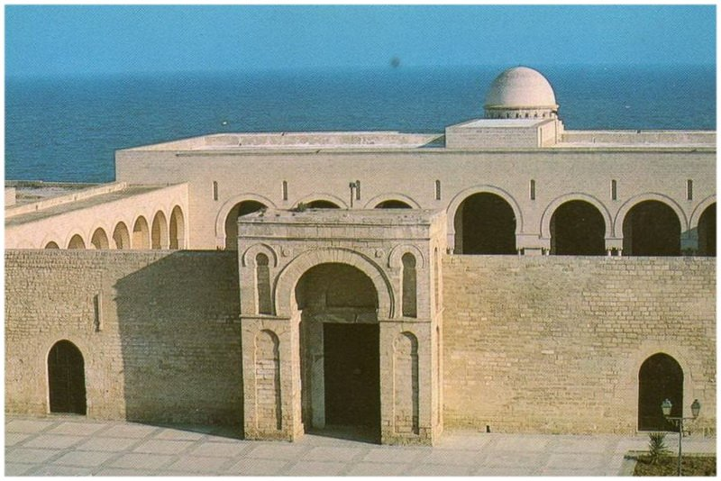

Grande Mosquée de Mahdia
Fondée en 921 par le calife fatimide Ubayd Allah al-Mahdi, cette mosquée est l'un des plus anciens monuments fatimides. Reconstruite dans les années 1960 selon les plans originaux, elle se distingue par sa sobriété architecturale et sa position stratégique près du port.